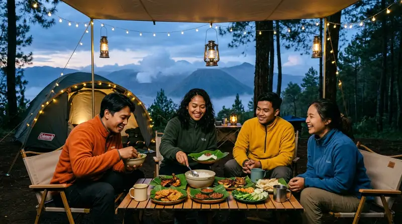

Ide makanan kemah wisata Batu yang cocok adalah menu praktis, hangat, mudah dimasak dengan alat minimal, dan aman disimpan selama perjalanan.
Ringkasan Inti
- Menu yang cocok untuk kemah di Batu adalah hidangan hangat, praktis, dan tahan simpan, karena udara pegunungan cenderung sejuk hingga dingin pada malam hari.
- Dinas Pariwisata Kota Batu mencatat 9.794.603 wisatawan sepanjang 2025, sehingga rencana belanja dan lokasi sebaiknya disiapkan sebelum berangkat.
- Pilih menu berdasarkan jumlah peserta, alat masak, lama menginap, dan aturan lokasi kemah.
- Keamanan pangan menentukan kenyamanan kemah: pisahkan bahan mentah, jaga suhu, dan siapkan air bersih.
- Bahan khas Batu seperti apel, sayuran, dan susu segar dapat menambah variasi menu.
Apa Itu Makanan Kemah dan Mengapa Cocok untuk Wisata Batu?
Makanan kemah adalah makanan yang mudah dibawa, dimasak sederhana, dan aman dikonsumsi di area terbuka, sehingga cocok bagi pengunjung perkemahan di Batu yang berudara sejuk.
Makanan kemah mencakup hidangan yang dibawa jadi maupun dimasak di lokasi selama bermalam. Cirinya adalah bahan tahan simpan, waktu memasak singkat, dan peralatan yang sedikit. Konsep ini berlaku untuk keluarga, rombongan sekolah, komunitas, hingga pasangan yang ingin camping santai.
Kota Batu di Jawa Timur berada di dataran tinggi. Udara yang sejuk membuat makanan berkuah, minuman hangat, dan hidangan bakar terasa lebih nyaman. Batu juga dikenal sebagai daerah penghasil apel, sayuran, dan susu segar, sehingga bahan lokal dapat menjadi bagian dari menu.
Manfaatnya antara lain biaya yang lebih terkendali, kebersihan dan porsi yang lebih mudah diatur, serta suasana kebersamaan saat memasak bersama. Batasannya, ketersediaan air bersih, bahan bakar, dan aturan penggunaan api dapat bervariasi di tiap lokasi. Risiko utamanya adalah gangguan pencernaan bila bahan segar tidak disimpan dengan benar.
Mengapa Perencanaan Makanan Penting Saat Berkemah di Batu?
Perencanaan makanan penting karena Batu ramai dikunjungi, sementara fasilitas dasar di lokasi kemah terbatas dan jam operasional warung dapat berbeda.
Dinas Pariwisata Kota Batu mencatat total 9.794.603 wisatawan sepanjang 2025, dan hampir seluruhnya adalah wisatawan nusantara. Pada 2024, jumlah kunjungan tercatat 11.005.189 wisatawan, sehingga angka 2025 lebih rendah namun tetap berada di kisaran hampir sepuluh juta orang per tahun.
Selama libur Lebaran 2025, Pemerintah Kota Batu mencatat 778.235 wisatawan yang berkunjung. Pada musim libur seperti ini, toko bahan makanan dan jalan menuju area perkemahan bisa padat. Pengunjung yang belum menyiapkan menu berisiko kehabisan bahan, membeli dengan harga kurang terkontrol, atau tiba di lokasi tanpa perlengkapan masak yang cukup.
Perencanaan yang baik mencakup tiga hal: menu per waktu makan, daftar belanja sesuai jumlah peserta, dan cara menyimpan bahan selama perjalanan.
Apa Saja Ide Sarapan Kemah yang Cepat dan Mengenyangkan?
Sarapan kemah yang cocok adalah menu hangat dan cepat saji seperti bubur instan, mi kuah telur, roti bakar, dan oatmeal dengan potongan apel Batu.
Sarapan sebaiknya selesai dalam waktu singkat agar waktu menjelajah lebih panjang. Udara pagi di dataran tinggi biasanya dingin, jadi menu berkuah atau minuman panas membantu tubuh terasa hangat.
Bubur dan Mi Kuah Hangat
Bubur instan hanya butuh air panas dan bisa diperkaya dengan telur rebus, abon, atau kerupuk. Mi kuah dapat ditambah sawi, telur, dan irisan bawang daun. Kedua menu ini hemat bahan bakar dan peralatan.
Roti Bakar dan Oatmeal Apel
Roti tawar dapat dipanggang di wajan kecil dengan mentega lalu diisi selai, keju, atau cokelat. Oatmeal diseduh air panas atau susu, lalu ditambah potongan apel dan sedikit madu. Menu ini ringan, mengenyangkan, dan mudah dibersihkan.

Momen hangat memasak dan bersantap malam bersama rombongan di bumi perkemahan Batu Malang.
Apa Saja Ide Makan Malam Kemah yang Menghangatkan?
Makan malam kemah yang cocok berupa menu satu panci seperti sop, nasi liwet, soto, atau ayam dan sayur bakar, karena hangat, mengenyangkan, dan minim peralatan.
Malam hari di perkemahan Batu umumnya lebih dingin, sehingga hidangan panas menjadi pilihan yang nyaman. Menu satu panci mengurangi cucian dan menghemat air.
Sop dan Soto Satu Panci
Sop ayam sayur dengan wortel, kentang, dan kubis memakai bahan yang mudah ditemukan di Batu. Soto sederhana dapat dibuat dari bumbu instan atau bumbu racikan rumah. Kuah panas membantu tubuh tetap hangat setelah beraktivitas.
Nasi Liwet untuk Rombongan
Nasi liwet dimasak dalam satu panci dengan bumbu bawang, serai, dan daun salam. Lauk seperti telur, ikan asin, atau ayam suwir bisa ditambahkan. Menu ini cocok untuk rombongan karena satu panci dapat melayani banyak orang.
Bagaimana Memanggang Makanan dengan Aman?
Panggang makanan hanya di area yang mengizinkan api terbuka, gunakan api sedang, dan pastikan ayam, ikan, dan sosis matang seluruhnya. Sebagian lokasi kemah membatasi api unggun atau pembakaran terbuka, jadi tanyakan aturan pengelola sebelum menyalakan api. Jangan pernah memasak dengan kompor atau bara di dalam tenda karena risiko kebakaran dan gas berbahaya.
Camilan dan Minuman Apa yang Cocok untuk Kemah di Batu?
Camilan kemah yang cocok adalah makanan hangat dan tahan simpan seperti jagung bakar, pisang bakar, kacang, roti, serta minuman jahe, teh, kopi, atau susu hangat.
Camilan membantu menjaga tenaga di antara waktu makan utama. Pilih yang tidak mudah basi, seperti kacang panggang, biskuit, atau buah utuh seperti apel dan pisang. Jagung dan pisang bakar menjadi pilihan favorit saat berkumpul malam hari.
Minuman hangat sangat membantu di udara dingin. Wedang jahe, teh, cokelat panas, dan susu hangat dapat dibuat dari sachet atau bahan sederhana. Bawa termos agar air panas dari pagi tetap tersedia hingga siang. Batasi kopi menjelang tidur bagi peserta yang sensitif terhadap kafein.
Bagaimana Memilih Menu Sesuai Jenis Kemah?
Pilihan menu bergantung jenis kemah: kemah mobil dan glamping dapat memakai bahan segar dan alat lengkap, sedangkan pendakian ringan menuntut makanan ringkas dan ringan.
| Jenis Kemah | Akses Alat dan Es | Contoh Menu | Batasan |
|---|---|---|---|
| Kemah mobil atau keluarga | Cooler box besar, kompor, panci lebih dari satu | Sop ayam, nasi liwet, sate, jagung bakar | Perlu ruang kendaraan dan manajemen es |
| Glamping | Dapur atau fasilitas pengelola tergantung paket | Menu paket, bakar-bakaran, camilan hangat | Menu dan aturan mengikuti pengelola |
| Kemah ringan atau pendakian | Kompor kecil, satu panci, tanpa es | Mi kuah, oatmeal, bubur instan, roti | Bahan harus ringan dan tahan simpan |
Kemah mobil memberi kebebasan paling besar dalam memilih bahan segar. Kemah ringan menuntut perhitungan berat dan kepraktisan. Pada glamping, tanyakan lebih dulu apakah makanan dari luar boleh dibawa dan apakah dapur tersedia.
Faktor Apa yang Perlu Dipertimbangkan Sebelum Memilih Menu?
Faktor utama dalam memilih makanan kemah meliputi cuaca, jumlah peserta, alat masak, lama menginap, aturan lokasi, anggaran, dan kebutuhan diet atau alergi peserta.
- Cuaca: pada musim hujan, siapkan menu yang bisa dimasak cepat dan wadah yang melindungi bahan dari basah.
- Jumlah peserta: rombongan besar lebih efisien dengan menu satu panci.
- Alat masak: sesuaikan menu dengan jumlah kompor, panci, dan bahan bakar yang dibawa.
- Lama menginap: bahan segar dipakai di hari pertama, bahan awet untuk hari berikutnya.
- Aturan lokasi: pengelola dapat membatasi api terbuka, musik, atau pembuangan limbah.
- Anggaran: tetapkan batas per orang agar belanja terarah.
- Alergi dan pantangan: catat sebelum belanja, terutama alergi kacang, seafood, dan susu.
Apa Kesalahan Umum dalam Menyiapkan Makanan Kemah?
Kesalahan umum meliputi membawa bahan terlalu banyak, mencampur daging mentah dengan makanan matang, tidak membawa air bersih, dan mengabaikan aturan api terbuka di lokasi kemah.
Kesalahan lain adalah tidak mencoba resep sebelum berangkat, sehingga menu gagal saat dimasak di lapangan. Banyak peserta juga lupa membawa kantong sampah, tisu basah, dan sabun cuci. Bahan segar yang disimpan tanpa es atau wadah tertutup mudah rusak, apalagi bila perjalanan dari kota asal memakan waktu lama.
Hindari pula menumpuk menu yang rumit. Di area perkemahan, hidangan dengan lima langkah atau lebih biasanya memakan waktu dan air yang banyak.
Bagaimana Agar Makanan Kemah Tetap Lezat?
Makanan kemah tetap lezat bila bumbu diracik dan dikemas dari rumah, bahan dipotong lebih dulu, dan hidangan disajikan hangat saat udara pegunungan Batu terasa dingin.
Beberapa langkah sederhana membantu rasa tetap terjaga. Racik bumbu dasar di rumah dan simpan dalam wadah kecil tertutup. Potong sayur dan daging sebelum berangkat, lalu kemas terpisah. Bawa garam, merica, kecap, saus sambal, dan bumbu penyedap kemasan kecil.
Tambahkan sentuhan segar seperti jeruk nipis, bawang goreng, atau irisan cabai di tempat. Sajikan makanan selagi panas dan gunakan panci bertutup agar suhu bertahan. Memasak bersama juga membuat suasana lebih menyenangkan dan makanan terasa lebih nikmat.
Panduan Lanjutan untuk Makanan Kemah di Batu
Panduan lanjutan untuk makanan kemah di Batu mencakup penyimpanan makanan yang aman, daftar belanja logistik rombongan, dan resep masak sederhana dengan alat minimal.
- Pelajari cara menyimpan makanan saat berkemah di Batu agar tetap aman untuk mengatur cooler box, suhu, dan kebersihan.
- Susun daftar belanja makanan camping di Batu untuk rombongan lengkap dengan cara menghitung porsi.
- Ikuti resep masak praktis camping di Batu dengan alat minimal untuk sop, nasi liwet, mi kuah, dan camilan bakar.
Untuk acuan keamanan pangan yang lebih luas, baca informasi keamanan pangan dari Organisasi Kesehatan Dunia (WHO).
FAQ Ide Makanan Kemah Wisata Batu
Makanan yang praktis dibawa untuk kemah di Batu adalah mi instan, bubur instan, telur, roti, sosis, kacang, buah utuh, dan sayuran tahan simpan seperti wortel dan kentang. Bahan ini mudah dimasak dan tidak membutuhkan penyimpanan dingin yang ketat.
Aturan api terbuka berbeda di setiap area perkemahan di Batu. Sebagian pengelola mengizinkan api unggun atau bakar-bakaran di titik tertentu, sebagian lainnya melarang. Tanyakan kepada pengelola lokasi sebelum menyalakan api, dan gunakan kompor portabel bila api terbuka dibatasi.
Makanan matang umumnya sebaiknya tidak dibiarkan di suhu ruang lebih dari dua jam. Bila tidak habis, simpan dalam wadah tertutup di cooler box dengan es dan habiskan secepatnya, atau buang bila ragu terhadap kondisinya.
Minuman hangat yang cocok untuk udara dingin di Batu adalah wedang jahe, teh, cokelat panas, susu hangat, dan kopi. Bawa termos agar air panas tetap tersedia, dan batasi kopi menjelang tidur.
Siapkan makanan kemah untuk anak-anak dengan menu sederhana yang dimasak matang seluruhnya, seperti nasi dengan telur, sop, atau roti dengan isian. Bawa camilan sehat seperti buah dan biskuit, hindari makanan terlalu pedas, dan pastikan air minum bersih tersedia.
Sebaiknya bawa air minum sendiri dalam jumlah cukup, karena ketersediaan air bersih di area kemah dapat bervariasi. Air untuk memasak dan mencuci alat juga perlu diperhitungkan, terutama pada kemah yang bermalam lebih dari satu hari.